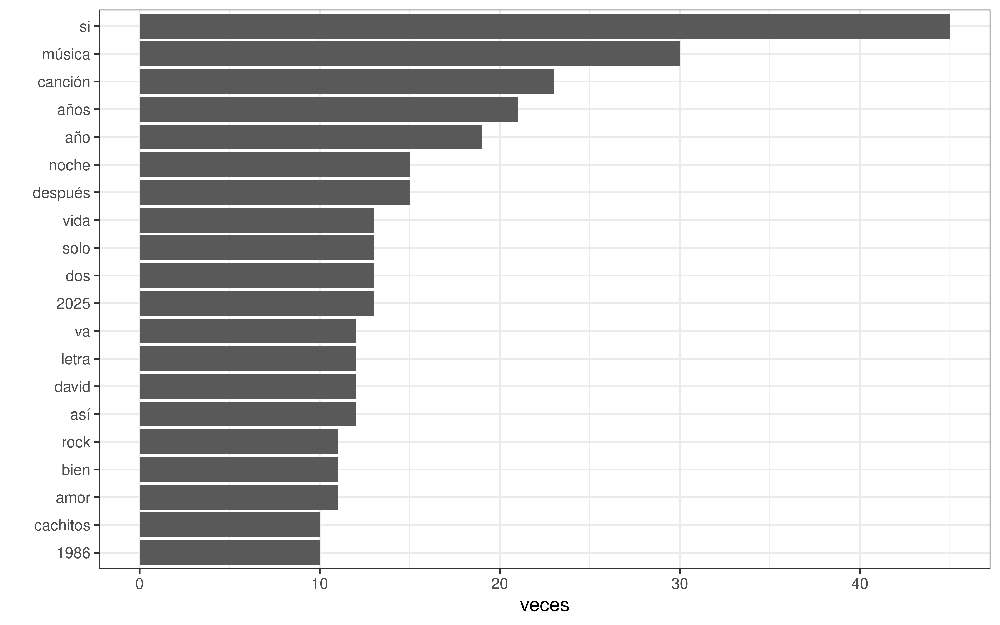
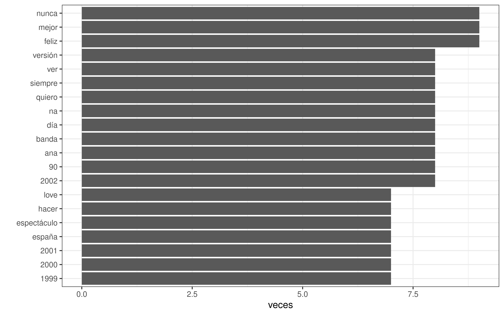
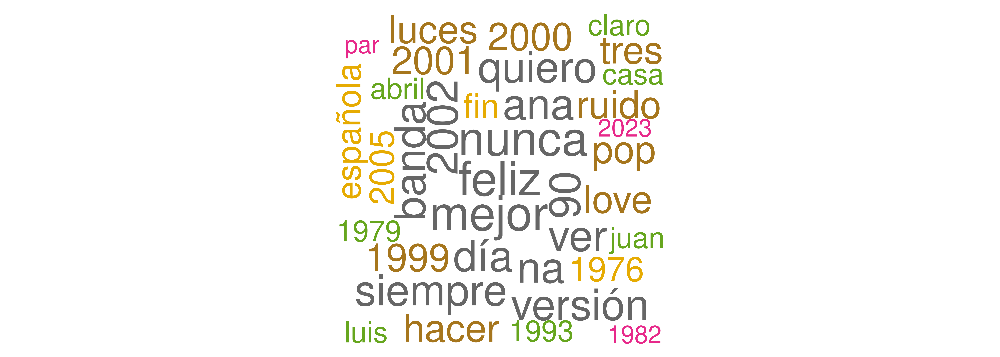
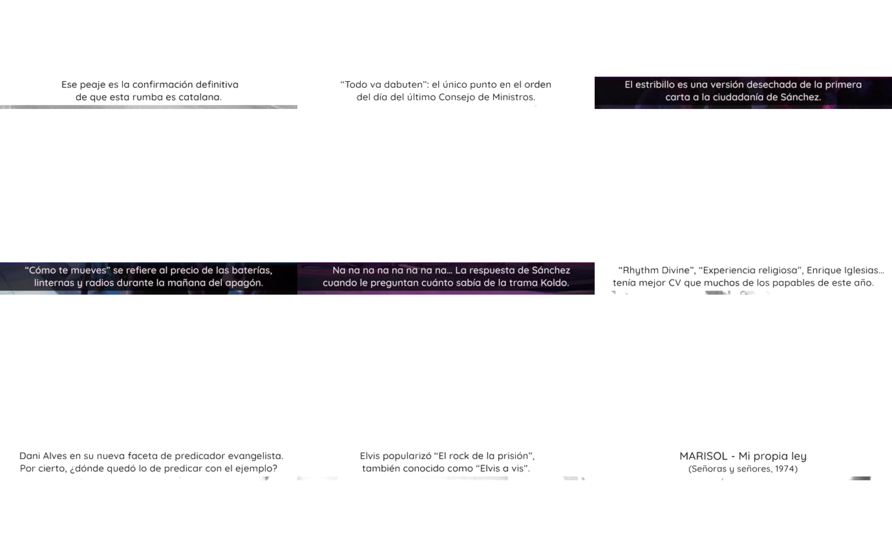
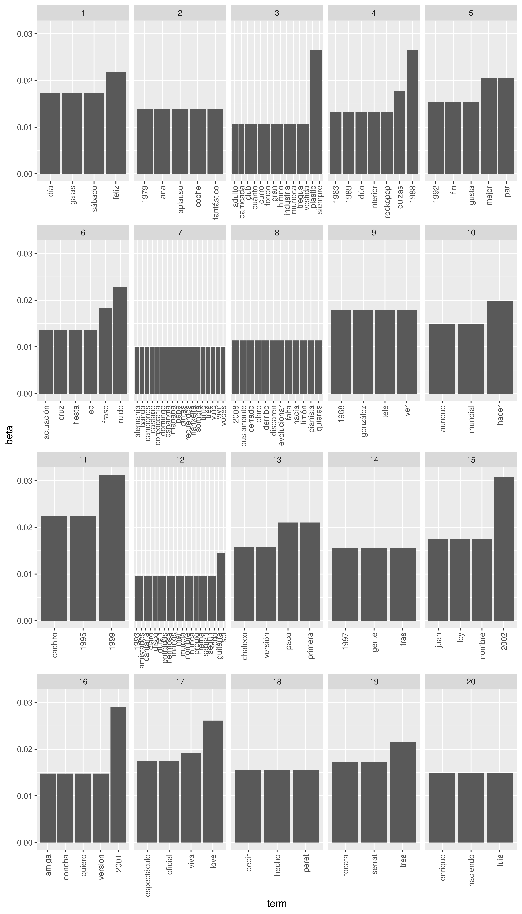
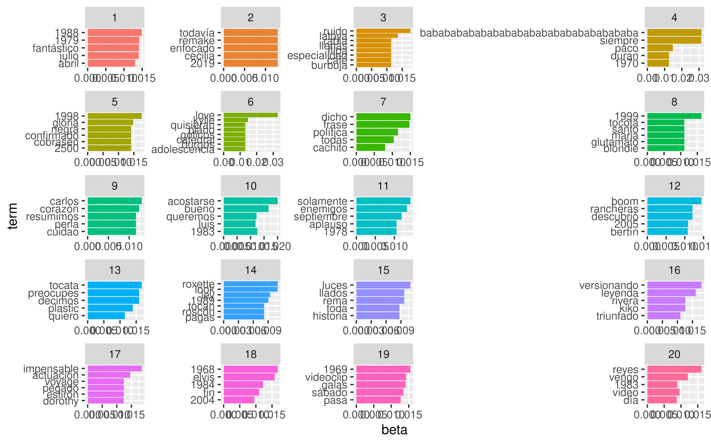
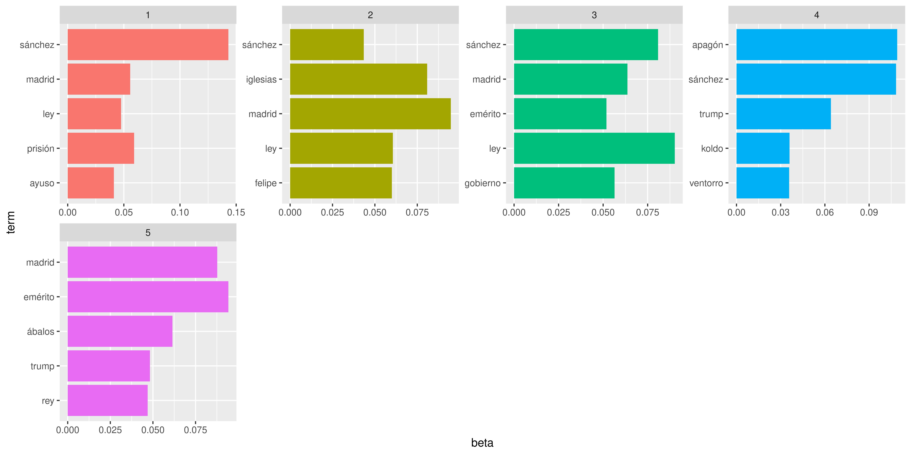
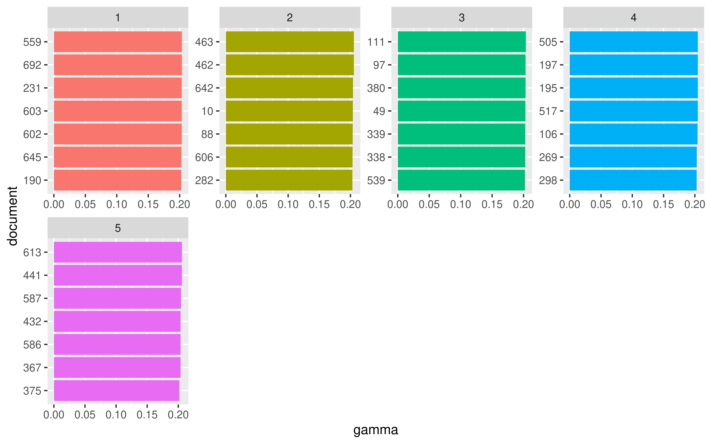
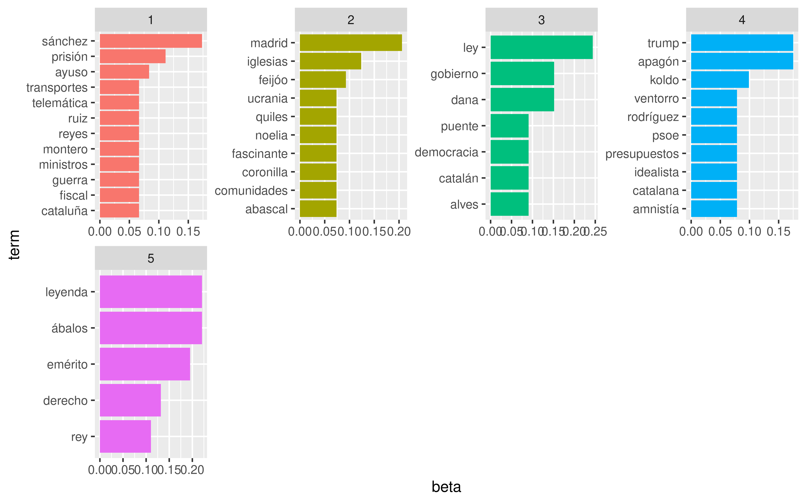

Cachitos 2025. Tercera parte. The hard way
Anteriores entradas:
El csv con el texto de los rótulos para 2025 lo tenemos en este enlace
Intro
Este año simplemente estoy reejecutando el código con nuevos datos y si no veo nada raro no estoy cambiando ni el texto en el qmd. A este post lo he llamado “The hard way” porque implica limpiar texto a mano, analizar con un modelo de LDA etc. En el siguiente post veremos el camino fácil, simplemente pasándole los rótulos a un llm y a ver qué puede hacer, cómo adelanto, un llm suelta esto
2️⃣ Cuando aparece política, el gobierno sale más
En los rótulos con target político claro:
El gobierno aparece más veces que la oposición.
-
El tono hacia el gobierno es:
más irónico
más persistente
La oposición aparece menos, pero de forma más caricaturesca.
👉 No es tanto a quién se critica, sino cómo.
Librerías
Lectura de datos, y vistazo datos
Show the code
root_directory = "~/proyecto_cachitos/"
anno <- "2025"Leemos el csv. Uso DT y así podéis ver todos los datos o buscar cosas, por ejemplo mazón o sánchez
Show the code
Pues nos valdría con esto para buscar términos polémicos.
Algo de minería de texto
Quitamos stopwords y tokenizamos de forma que tengamos cada palabra en una fila manteniendo de qué rótulo proviene
Show the code
to_remove <- c(tm::stopwords("es"),
"hello",
"110", "4","1","2","7","10","0","ñ","of",
"5","á","i","the","3", "n", "p",
"ee","uu","mm","ema", "zz",
"wr","wop","wy","x","xi","xl","xt",
"xte","yí", "your")
subtitulos_proces_one_word <- subtitulos_proces |>
unnest_tokens(input = texto,
output = word) |>
filter(! word %in% to_remove) |>
filter(nchar(word) > 1)
dim(subtitulos_proces_one_word)
#> [1] 4593 5Show the code
DT::datatable(subtitulos_proces_one_word)Contar ocurrencias de cosas es lo más básico.
Show the code

Y como todos los años, una de las palabras más comunes es “canción” . ¿Y si añadimos las 20 palabras como stopword, junto con algunas como [“tan”, “sólo”,“así”, “aquí”, “hoy”] . La tarea de añadir palabras como stopwords requiere trabajo, tampoco nos vamos a parar tanto.
Show the code
(add_to_stop_words <- palabras_ordenadas_1 |>
slice(1:25) |>
pull(word) )
#> [1] "si" "música" "canción" "años" "año" "después"
#> [7] "noche" "2025" "dos" "solo" "vida" "así"
#> [13] "david" "letra" "va" "amor" "bien" "rock"
#> [19] "1986" "cachitos" "nueva" "ser" "vez" "1990"
#> [25] "ahora"
to_remove <- unique(c(to_remove,
add_to_stop_words,
"tan",
"sólo",
"así",
"aquí",
"hoy",
"va"))
subtitulos_proces_one_word <- subtitulos_proces |>
unnest_tokens(input = texto,
output = word) |>
filter(! word %in% to_remove) |>
filter(nchar(word) > 1)Show the code

También podemos ver ahora una nube de palabras
Show the code
pal <- brewer.pal(8,"Dark2")
subtitulos_proces_one_word |>
group_by(word) |>
count() |>
with(wordcloud(word, n, random.order = FALSE, max.words = 100, colors=pal)) 
¿Polémicos?
Creamos lista de palabras polémicas
Show the code
palabras_polem <-
c(
"abascal",
"abalos",
"ábalos",
"alves",
"almeida",
"amnistía",
"ayuso",
"apagón",
"aznar",
"belarra",
"bloqueo",
"brusel",
"catal",
"ciudada",
"comunidad",
"constitucional",
"coron",
"crispación",
"dana",
"democr",
"democracia",
"derech",
"emérito",
"emerito",
"extremadura",
"fach",
"falcon",
"fasc",
"felipe",
"franco",
"feij",
"feijóo",
"fiscal",
"gaza",
"gobierno",
"gónzalez",
"guardia",
"guerra",
"idealista",
"iglesias",
"izquier",
"koldo",
"ley",
"madrid",
"manipulador",
"militares",
"minist",
"monarca",
"montero",
"noelia",
"oposición",
"page",
"pandem",
"polarización",
"polarizados",
"pp",
"principe",
"prisión",
"psoe",
"sumar",
"presupuestos",
"puente",
"puigdemont",
"quiles",
"republic",
"rey",
"rodríguez",
"rubiales",
"rufián",
"ruiz",
"sánchez",
"sanz",
"telemática",
"tezanos",
"toled",
"transición",
"transportes",
"trump",
"ucrania",
"uco",
"ultra",
"venezuela",
"ventorro",
"vicepre",
"vox",
"yolanda",
"zarzu",
"zarzuela"
)Y construimos una regex simple
Show the code
(exp_regx <- paste0("^",paste(palabras_polem, collapse = "|^")))
#> [1] "^abascal|^abalos|^ábalos|^alves|^almeida|^amnistía|^ayuso|^apagón|^aznar|^belarra|^bloqueo|^brusel|^catal|^ciudada|^comunidad|^constitucional|^coron|^crispación|^dana|^democr|^democracia|^derech|^emérito|^emerito|^extremadura|^fach|^falcon|^fasc|^felipe|^franco|^feij|^feijóo|^fiscal|^gaza|^gobierno|^gónzalez|^guardia|^guerra|^idealista|^iglesias|^izquier|^koldo|^ley|^madrid|^manipulador|^militares|^minist|^monarca|^montero|^noelia|^oposición|^page|^pandem|^polarización|^polarizados|^pp|^principe|^prisión|^psoe|^sumar|^presupuestos|^puente|^puigdemont|^quiles|^republic|^rey|^rodríguez|^rubiales|^rufián|^ruiz|^sánchez|^sanz|^telemática|^tezanos|^toled|^transición|^transportes|^trump|^ucrania|^uco|^ultra|^venezuela|^ventorro|^vicepre|^vox|^yolanda|^zarzu|^zarzuela"Y nos creamos una variable para identificar si es palabra polémica
Show the code
subtitulos_proces_one_word <- subtitulos_proces_one_word |>
mutate(polemica= str_detect(word, exp_regx))
subtitulos_polemicos <- subtitulos_proces_one_word |>
filter(polemica) |>
pull(n_fichero) |>
unique()
subtitulos_polemicos
#> [1] "00000026.jpg.subtitulo.tif.txt" "00000048.jpg.subtitulo.tif.txt"
#> [3] "00000090.jpg.subtitulo.tif.txt" "00000091.jpg.subtitulo.tif.txt"
#> [5] "00000100.jpg.subtitulo.tif.txt" "00000118.jpg.subtitulo.tif.txt"
#> [7] "00000120.jpg.subtitulo.tif.txt" "00000150.jpg.subtitulo.tif.txt"
#> [9] "00000157.jpg.subtitulo.tif.txt" "00000169.jpg.subtitulo.tif.txt"
#> [11] "00000180.jpg.subtitulo.tif.txt" "00000186.jpg.subtitulo.tif.txt"
#> [13] "00000205.jpg.subtitulo.tif.txt" "00000212.jpg.subtitulo.tif.txt"
#> [15] "00000225.jpg.subtitulo.tif.txt" "00000359.jpg.subtitulo.tif.txt"
#> [17] "00000369.jpg.subtitulo.tif.txt" "00000371.jpg.subtitulo.tif.txt"
#> [19] "00000420.jpg.subtitulo.tif.txt" "00000435.jpg.subtitulo.tif.txt"
#> [21] "00000444.jpg.subtitulo.tif.txt" "00000456.jpg.subtitulo.tif.txt"
#> [23] "00000461.jpg.subtitulo.tif.txt" "00000464.jpg.subtitulo.tif.txt"
#> [25] "00000483.jpg.subtitulo.tif.txt" "00000493.jpg.subtitulo.tif.txt"
#> [27] "00000507.jpg.subtitulo.tif.txt" "00000515.jpg.subtitulo.tif.txt"
#> [29] "00000520.jpg.subtitulo.tif.txt" "00000547.jpg.subtitulo.tif.txt"
#> [31] "00000567.jpg.subtitulo.tif.txt" "00000600.jpg.subtitulo.tif.txt"
#> [33] "00000607.jpg.subtitulo.tif.txt" "00000608.jpg.subtitulo.tif.txt"
#> [35] "00000650.jpg.subtitulo.tif.txt" "00000671.jpg.subtitulo.tif.txt"
#> [37] "00000683.jpg.subtitulo.tif.txt" "00000692.jpg.subtitulo.tif.txt"
#> [39] "00000720.jpg.subtitulo.tif.txt" "00000753.jpg.subtitulo.tif.txt"
#> [41] "00000778.jpg.subtitulo.tif.txt" "00000795.jpg.subtitulo.tif.txt"
#> [43] "00000812.jpg.subtitulo.tif.txt" "00000825.jpg.subtitulo.tif.txt"
#> [45] "00000832.jpg.subtitulo.tif.txt" "00000833.jpg.subtitulo.tif.txt"
#> [47] "00000904.jpg.subtitulo.tif.txt" "00000906.jpg.subtitulo.tif.txt"
#> [49] "00000923.jpg.subtitulo.tif.txt" "00000960.jpg.subtitulo.tif.txt"
#> [51] "00000969.jpg.subtitulo.tif.txt" "00000975.jpg.subtitulo.tif.txt"
#> [53] "00001000.jpg.subtitulo.tif.txt" "00001019.jpg.subtitulo.tif.txt"
#> [55] "00001049.jpg.subtitulo.tif.txt" "00001058.jpg.subtitulo.tif.txt"
#> [57] "00001066.jpg.subtitulo.tif.txt" "00001074.jpg.subtitulo.tif.txt"
#> [59] "00001075.jpg.subtitulo.tif.txt" "00001112.jpg.subtitulo.tif.txt"
#> [61] "00001113.jpg.subtitulo.tif.txt" "00001118.jpg.subtitulo.tif.txt"
#> [63] "00001133.jpg.subtitulo.tif.txt" "00001166.jpg.subtitulo.tif.txt"
#> [65] "00001203.jpg.subtitulo.tif.txt" "00001208.jpg.subtitulo.tif.txt"
#> [67] "00001228.jpg.subtitulo.tif.txt" "00001229.jpg.subtitulo.tif.txt"
#> [69] "00001289.jpg.subtitulo.tif.txt" "00001298.jpg.subtitulo.tif.txt"
#> [71] "00001316.jpg.subtitulo.tif.txt"Y podemos ver en el texto original antes de tokenizar qué rótulos hemos considerado polémicos y qué texto
Show the code
subtitulos_proces |>
filter(n_fichero %in% subtitulos_polemicos) |>
arrange(n_fichero) |>
pull(texto) |>
unique()
#> [1] "ahora en varias comunidades autónomas se les conoce como seguro privado"
#> [2] "siniestro total assumpta concierto madrid 1986"
#> [3] "leticia sabater marta sánchez si la categoría es rubio de bote ya tarda en salir david broncano"
#> [4] "marta sánchez quizás quizás quizás tariro tariro 1988"
#> [5] "como la democracia española ha cumplido 50 este año no preguntaremos quién se conserva mejor"
#> [6] "trump la convirtió en sintonía de su campaña al enterarse de que era un himno gay dijo"
#> [7] "obviaremos el chiste sobre trump epstein y un vídeo lleno de jóvenes porque no queremos acabar como jimmy kimmel"
#> [8] "ese peaje es la confirmación definitiva de que esta rumba es catalana"
#> [9] "bien pagú el concepto del 95 de los bizums de koldo"
#> [10] "al de lunares se le va a atragantar la cal igual que a felipe gonzález"
#> [11] "todo va dabuten el único punto en el orden del día del último consejo de ministros"
#> [12] "mucha gente sin relación aparente fingiendo que sabe lo que hace bonita metáfora del gobierno de coalición"
#> [13] "el contenido de rubias en las nancys rubias es equiparable al de socialismo en el psoe"
#> [14] "no hemos entendido aún lo del cupo catalán vamos a entender el amor"
#> [15] "subtítulos generados por santiago abascal tras su discurso de apoyo a le pen"
#> [16] "el estribillo es una versión desechada de la primera carta a la ciudadanía de sánchez"
#> [17] "otro apagón menos mal que el siguiente cachito va a pilas"
#> [18] "cómo te mueves se refiere al precio de las baterías linternas y radios durante la mañana del apagón"
#> [19] "dice algo la nueva ley antitabaco sobre prohibir los cigarrillos electrónicos que huelen a pedo"
#> [20] "no es la de el chacachá del tren porque esa es de otro consorcio el de transportes"
#> [21] "camina camina la única manera de librarte de los atascos en madrid"
#> [22] "feijóo demostró con esta canción que su gusto musical es como algunas de sus ideas en blanco y negro"
#> [23] "si la canción anterior ha levantado a feijóo de su asiento esta en gallego ha hecho que ayuso abandone la habitación"
#> [24] "aquí pondríamos lo del purito pero la nueva ley antitabaco también ha llegado a los rótulos"
#> [25] "su tierra lleva más de un año recuperándose de la dana y de una gestión bastante más oscura que ese plató"
#> [26] "ese escenario en idealista sería un luminoso ático ideal parejas"
#> [27] "na na na na na na na na la respuesta de sánchez cuando le preguntan cuánto sabía de la trama koldo"
#> [28] "la actitud como los presupuestos generales del estado puede estirarse muchos años"
#> [29] "lo sorprendente del tocado es la puntería del pterodáctilo para anidar en una coronilla"
#> [30] "el discurso de convertir en víctima al delincuente no lo inventó miguel ángel rodríguez"
#> [31] "pues seguro que a trump le encanen serio no podemos hacer ese chiste"
#> [32] "gonzález amador en el ático tapándole los oídos a ayuso"
#> [33] "lo mismo pensó la comunidad de madrid y el capricho le costó a los madrileños 484 000 euros"
#> [34] "gloria es el puente natural entre celia cruz y shakira más de 50 años facturando"
#> [35] "solo es como querría gobernar el pp pero como ana y omar acabarán haciendo un dúo"
#> [36] "la conexión españa usa más rara hasta que salió ábalos con la camiseta de orlando florida"
#> [37] "la cantante vino directa de hacerse la foto de la orla de derecho"
#> [38] "en el hormiguero nacho pidió a los comandantes tan elegantes como los de antes que se lleven al gobierno por delantes"
#> [39] "con la sentencia del fiscal general del estado mucha gente se quedó como sus trajes a cuadros"
#> [40] "pedro sánchez está pillando tips de maquillaje para cuando se filtre el próximo informe de la uco"
#> [41] "solo se vive una vez la frase que precede a 9 de cada 10 malas decisiones y el subtexto de la nueva biografía del emérito"
#> [42] "de tal astilla tal palo el patriarca el verdadero rey emérito"
#> [43] "dedicada a quienes tengáis ganas de mambo como mariló montero cuando fue a la revuelta"
#> [44] "no hemos puesto mi burrito sabanero porque nos lo ha pedido amnistía internacional"
#> [45] "enrique iglesias rhythm divine con la primera al 2000"
#> [46] "rhuthm divine experiencia religiosa enrique iglesias tenía mejor cv que muchos de los papables de este año"
#> [47] "ariel rot compuso la música durante un apagón qué hiciste tú en el de abril llenar la bañera"
#> [48] "shakira te dejo madrid noche de fiesta 2001"
#> [49] "este bolero de antonio machín ha tenido más versiones que la sobremesa en el ventorro"
#> [50] "y ahora una leyenda versionando a otra"
#> [51] "marc parrot creó su alter ego para hacer versiones en especiales de nochevieja en cataluña y lo petó"
#> [52] "dani alves en su nueva faceta de predicador evangelista por cierto dónde quedó lo de predicar con el ejemplo"
#> [53] "todos los españoles hablarán del eclipse menos los madrileños que se quejarán de que en madrid no se ve bien"
#> [54] "la letra eso sí se repite más que una conjunción copulativa en una presentación de javier ruiz"
#> [55] "el viaje en coche más arriesgado desde el del peugeot de las primarias de sánchez"
#> [56] "lo que ha envejecido peor de este vídeo es la hiedra y eso que es más falsa que el cv de noelia núñez"
#> [57] "el resumen de la declaración de mazón en la comisión de investigación de la dana"
#> [58] "van más apretados que el disco duro en el chándal de la amiga de ábalos"
#> [59] "ver a delfín sin gafas es como ver a aznar sin bigote o a felipe gonzález sin socialismo cuesta acostumbrarse"
#> [60] "bruno lomas el rock de la prisión luces en la noche 1973"
#> [61] "elvis popularizó el rock de la prisión también conocido como elvis a vis"
#> [62] "su segundo nombre es miseria de apellido quiles"
#> [63] "actuaron en el cumpleaños del rey emérito los del río y el del lío"
#> [64] "a la batería rick allen una leyenda capaz de tocar como dios ahorrando un 50 en baquetas"
#> [65] "lo más fascinante del vídeo es que le quedara aire para cantar después de subir la cuesta del realejo"
#> [66] "los reyes ya no lloran los reyes facturan"
#> [67] "marisol mi propia ley señoras y señores 1974"
#> [68] "el sueño de cualquier nacionalista mi propia ley"
#> [69] "manolo siempre ha tenido cara de interpretar el papel de miliciano 1 en una peli de la guerra civil"
#> [70] "sildavia ni siquiera existe y ya es un país de la unión hay esperanza para ucrania"
#> [71] "hoy esta letra tendría una órden de alejamiento y una pulsera telemática si funcionaran claro"Escribimos en un fichero los subtítulos polémicos.
Y podemos ver los fotogramas.
Show the code
# identificamos nombre del archivo jpg con los rótulos polémicos
polemica_1_fotogramas <- unique(substr(subtitulos_polemicos, 1,9))
head(polemica_1_fotogramas)
#> [1] "00000026." "00000048." "00000090." "00000091." "00000100." "00000118."
# creamos la ruta completa donde están
polemica_1_fotogramas_full <- paste0(str_glue("{root_directory}video/{anno}_jpg/"), polemica_1_fotogramas, "jpg")
# añadimos sufijo subtitulo.tif para tenr localizado la imagen que tiene solo los rótulos
subtitulos_polemicos_1_full <- paste0(polemica_1_fotogramas_full,".subtitulo.tif")Con la función image_read del paquete magick leemos las imágenes polémicas y los rótulos
Show the code
subtitulos_polemicos_img[[30]]Show the code
fotogramas_polemicos_img[[30]]Podemos ver una muestra de algunos de ellos.
Show the code
set.seed(50)
indices <- sort(sample(1:length(fotogramas_polemicos_img), 9))
lista_fotogram_polemicos <- lapply(fotogramas_polemicos_img[indices], grid::rasterGrob)
gridExtra::grid.arrange(grobs=lista_fotogram_polemicos )
Y el recorte de los subtítulos que hicimos enla primera entrega.
Show the code
lista_subtitulos <- lapply(subtitulos_polemicos_img[indices], grid::rasterGrob)
gridExtra::grid.arrange(grobs=lista_subtitulos)
Pues no sé yo si hay sesgo o no.
Tópicos
Hacemos algo de topic modelling a la antigua usanza, sin llm’s ni nada de eso. Pasé los rótulos originales por un par de llm’s sin obtener resultados claros, el sarcasmo aún le cuesta
Ya aviso que con tan pocos “documentos”, y siendo tan cortos cada rótulo, es muy probable que no salga mucho..
Tópicos usando conteo de palabras.
Contamos palabras con 3 caracteres o más.
Guardamos la variable name que nos indica en qué rótulo ha aparecido
Show the code
word_counts <- subtitulos_proces_one_word |>
group_by(name, word) |>
count(sort=TRUE) |>
mutate(ncharacters = nchar(word)) |>
filter(
ncharacters >= 3) |>
select(-ncharacters) |>
ungroup()
length(unique(word_counts$name))
#> [1] 630
head(word_counts, 15)
#> # A tibble: 15 × 3
#> name word n
#> <dbl> <chr> <int>
#> 1 16 siempre 5
#> 2 319 ruido 5
#> 3 45 quizás 3
#> 4 239 paco 3
#> 5 260 abril 3
#> 6 4 muertos 2
#> 7 4 toreros 2
#> 8 27 boom 2
#> 9 45 tariro 2
#> 10 106 rubias 2
#> 11 121 voyage 2
#> 12 139 baila 2
#> 13 156 rema 2
#> 14 222 meses 2
#> 15 234 camina 2Ahora convertimos este data.frame a un DocumentTermMatrix
Show the code
# usamos como peso la TermFrequency de la palabra
rotulos_dtm <- word_counts |>
cast_dtm(name, word, n, weighting = tm::weightTf)
rotulos_dtm
#> <<DocumentTermMatrix (documents: 630, terms: 2882)>>
#> Non-/sparse entries: 4064/1811596
#> Sparsity : 100%
#> Maximal term length: 36
#> Weighting : term frequency (tf)Podríamos haberlo visto en forma de filas = palabras y columnas = rótulo
Show the code
word_counts |>
cast_dfm(word, name, n)
#> Document-feature matrix of: 2,882 documents, 630 features (99.78% sparse) and 0 docvars.
#> features
#> docs 16 319 45 239 260 4 27 106 121 139
#> siempre 5 0 0 0 0 0 0 0 0 0
#> ruido 0 5 0 0 0 0 0 0 0 0
#> quizás 0 0 3 0 0 0 0 0 0 0
#> paco 0 0 0 3 0 0 0 0 0 0
#> abril 0 0 0 0 3 0 0 0 0 0
#> muertos 0 0 0 0 0 2 0 0 0 0
#> [ reached max_ndoc ... 2,876 more documents, reached max_nfeat ... 620 more features ]Vamos a ver si sale algo haciendo un LDA (Latent Dirichlet Allocation)
Considero 20 tópicos porque sí. El que quiera elegir con algo más de criterio que se mire esto
Show the code
# Cons
rotulos_lda <- LDA(rotulos_dtm, k = 20, control = list(seed = 1234))
rotulos_lda
#> A LDA_VEM topic model with 20 topics.
rotulos_lda_td <- tidy(rotulos_lda)
rotulos_lda_td
#> # A tibble: 57,640 × 3
#> topic term beta
#> <int> <chr> <dbl>
#> 1 1 siempre 4.35e- 3
#> 2 2 siempre 4.61e- 3
#> 3 3 siempre 2.66e- 2
#> 4 4 siempre 4.16e-196
#> 5 5 siempre 6.54e-196
#> 6 6 siempre 4.55e-196
#> 7 7 siempre 5.76e-196
#> 8 8 siempre 8.81e-196
#> 9 9 siempre 1.01e-195
#> 10 10 siempre 5.80e-196
#> # ℹ 57,630 more rows
# se suele ordenar por beta que ahora mismo no recuerdo que era,
top_terms <- rotulos_lda_td |>
group_by(topic) |>
top_n(3, beta) |>
ungroup() |>
arrange(topic, -beta)
top_terms
#> # A tibble: 130 × 3
#> topic term beta
#> <int> <chr> <dbl>
#> 1 1 feliz 0.0217
#> 2 1 sábado 0.0174
#> 3 1 galas 0.0174
#> 4 1 día 0.0174
#> 5 2 1979 0.0138
#> 6 2 aplauso 0.0138
#> 7 2 fantástico 0.0138
#> 8 2 coche 0.0138
#> 9 2 ana 0.0138
#> 10 3 siempre 0.0266
#> # ℹ 120 more rows
top_terms |>
mutate(term = reorder_within(term, beta, topic)) |>
ggplot(aes(term, beta)) +
geom_bar(stat = "identity") +
scale_x_reordered() +
facet_wrap(~ topic, scales = "free_x") +
theme(axis.text.x = element_text(angle = 90, vjust = 0.5, hjust=1))
Pues la verdad es que yo no veo nada interesante
Tópicos usando tfidf como peso
Vamos a probar usando tfidf
Como la función LDA no permite usar un DocumentTermMatrix que se haya construido con cast_dtm y usando como parámetro de weighting el peso tm::weightTfIdf nos construimos los datos de otra forma.
Show the code
tf_idf_data <- subtitulos_proces_one_word |>
filter(nchar(word)>2) |>
group_by(name,word) |>
summarise(veces_palabra = n()) |>
bind_tf_idf(word, name, veces_palabra) |>
ungroup()
tf_idf_data |>
arrange(desc(veces_palabra)) |>
head()
#> # A tibble: 6 × 6
#> name word veces_palabra tf idf tf_idf
#> <dbl> <chr> <int> <dbl> <dbl> <dbl>
#> 1 16 siempre 5 1 5.06 5.06
#> 2 319 ruido 5 0.625 5.35 3.34
#> 3 45 quizás 3 0.375 5.75 2.16
#> 4 239 paco 3 0.429 5.35 2.29
#> 5 260 abril 3 0.375 5.35 2.01
#> 6 4 muertos 2 0.333 6.45 2.15Para cada palabra tenemos su tf_idf dentro de cada rótulo en el que aparece
Show the code
tf_idf_data |>
filter(word== "sánchez")
#> # A tibble: 6 × 6
#> name word veces_palabra tf idf tf_idf
#> <dbl> <chr> <int> <dbl> <dbl> <dbl>
#> 1 44 sánchez 1 0.1 4.65 0.465
#> 2 45 sánchez 1 0.125 4.65 0.582
#> 3 190 sánchez 1 0.143 4.65 0.665
#> 4 276 sánchez 1 0.143 4.65 0.665
#> 5 417 sánchez 1 0.111 4.65 0.517
#> 6 574 sánchez 1 0.167 4.65 0.776Como de nuevo LDA solo acepta peso con valores enteros, pues simplemente multiplicamos por 100 el tf_idf y redondeamos
Show the code
result <- tidy(lda_model_long_1, 'beta')
result |>
group_by(topic) |>
top_n(5, beta) |>
ungroup() |>
arrange(topic, -beta) |>
mutate(term = reorder(term, beta)) |>
ggplot(aes(term, beta, fill = factor(topic))) +
geom_col(show.legend = FALSE) +
facet_wrap(~ topic, scales = "free", ncol = 4) +
coord_flip()
y como suele pasar con tan poco documentos no suele salir nada concluyente
Sólo con los rótulos polémicos
Asumiendo que parece que no tiene sentido hacer topicmodelling sobre estos datos, me picó la curiosidad de ver qué pasaba si sólo usaba los rótulos polémicos.
Show the code
tf_idf_data_polem <- subtitulos_proces_one_word |>
filter(nchar(word)>2, polemica == TRUE) |>
group_by(name,word) |>
summarise(veces_palabra = n()) |>
bind_tf_idf(word, name, veces_palabra) |>
ungroup()
tf_idf_data_polem |>
arrange(desc(veces_palabra)) |>
head()
#> # A tibble: 6 × 6
#> name word veces_palabra tf idf tf_idf
#> <dbl> <chr> <int> <dbl> <dbl> <dbl>
#> 1 645 reyes 2 1 4.25 4.25
#> 2 10 comunidades 1 1 4.25 4.25
#> 3 21 madrid 1 1 2.64 2.64
#> 4 44 sánchez 1 1 2.46 2.46
#> 5 45 sánchez 1 1 2.46 2.46
#> 6 49 democracia 1 1 4.25 4.25Topic modelling usando conteo de palabras
Show the code

Y bueno, algún tópico con “sánchez” “apagón” y “koldo” . pero nada muy claro
Show the code
result_documento_polem <- tidy(lda_model_long_polem, 'gamma')
result_documen_polem_top <-
result_documento_polem |>
group_by(topic) |>
top_n(7, gamma) |>
ungroup()
result_documen_polem_top |>
arrange(topic, -gamma) |>
mutate(document = reorder(document, gamma)) |>
ggplot(aes(document, gamma, fill = factor(topic))) +
geom_col(show.legend = FALSE) +
facet_wrap(~ topic, scales = "free", ncol = 4) +
coord_flip()
Veamos algunos subtítulos del tópico 4
Show the code
topico_4 <- result_documen_polem_top |>
filter(topic == 4) |>
pull(document)
subtitulos_proces |>
filter(name %in% as.numeric(topico_4)) |>
pull(texto)
#> [1] "el contenido de rubias en las nancys rubias es equiparable al de socialismo en el psoe"
#> [2] "otro apagón menos mal que el siguiente cachito va a pilas"
#> [3] "cómo te mueves se refiere al precio de las baterías linternas y radios durante la mañana del apagón"
#> [4] "ese escenario en idealista sería un luminoso ático ideal parejas"
#> [5] "el discurso de convertir en víctima al delincuente no lo inventó miguel ángel rodríguez"
#> [6] "ariel rot compuso la música durante un apagón qué hiciste tú en el de abril llenar la bañera"
#> [7] "este bolero de antonio machín ha tenido más versiones que la sobremesa en el ventorro"Veamos más documentos relacionados con este tópico
Show the code
top_10_topic4 <- result_documento_polem |>
group_by(topic) |>
top_n(12, gamma) |>
filter(topic==4) |>
pull(document)
subtitulos_proces |>
filter(name %in% top_10_topic4) |>
pull(texto)
#> [1] "el contenido de rubias en las nancys rubias es equiparable al de socialismo en el psoe"
#> [2] "otro apagón menos mal que el siguiente cachito va a pilas"
#> [3] "cómo te mueves se refiere al precio de las baterías linternas y radios durante la mañana del apagón"
#> [4] "ese escenario en idealista sería un luminoso ático ideal parejas"
#> [5] "na na na na na na na na la respuesta de sánchez cuando le preguntan cuánto sabía de la trama koldo"
#> [6] "la actitud como los presupuestos generales del estado puede estirarse muchos años"
#> [7] "el discurso de convertir en víctima al delincuente no lo inventó miguel ángel rodríguez"
#> [8] "gloria es el puente natural entre celia cruz y shakira más de 50 años facturando"
#> [9] "pedro sánchez está pillando tips de maquillaje para cuando se filtre el próximo informe de la uco"
#> [10] "no hemos puesto mi burrito sabanero porque nos lo ha pedido amnistía internacional"
#> [11] "ariel rot compuso la música durante un apagón qué hiciste tú en el de abril llenar la bañera"
#> [12] "este bolero de antonio machín ha tenido más versiones que la sobremesa en el ventorro"Topic modelling usando tf_idf
Puede verse algo más claro usando tf-idf
Show the code
Show the code

IA’s
En los siguientes post preguntaré directamente a una IA (gpt 5.2) dándole el csv con el texto de los rótulos y lo hace bastante bien. También tengo pensado trastear un poco con la librería ellmer de R y ver si le paso algún fotograma o varios y ver qué puede sacar, probaré con Claude, pero no quiero gastar un montón de tokens.
Al usar IA generativa podemos meterle en el contexto cosas que sepamos y además, los modelos de lenguaje entrenados con datos nuevos han leído ya cosas sobre el programa de cachitos en otros años.